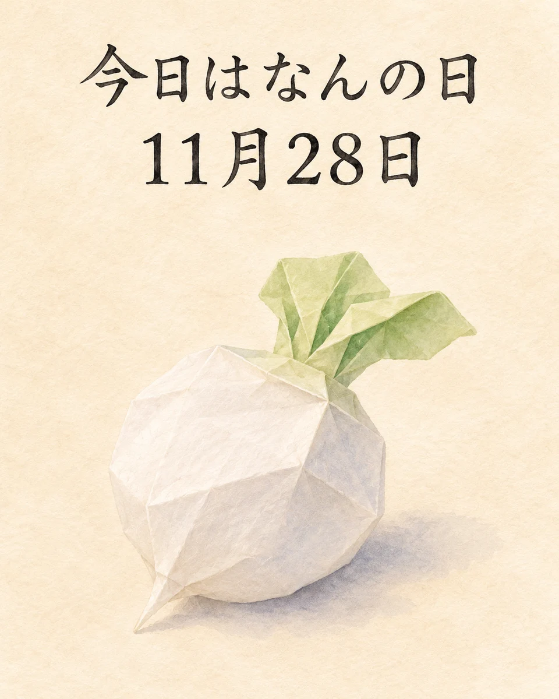

11月28日と29日、伏見の京都パルスプラザに、京都の野菜や水産物、宇治茶などが集まります。府内の農林水産業と、そこで働く人たちの仕事を身近に感じられる秋の催しです。
会場では、京野菜を折り紙で表す教室も開かれます。大根と聞いて細長い姿を思い浮かべる方も、丸い聖護院大根なら、どこから折り始めるでしょう。いつもの食材も、形に目を向けると新しい表情が見えてきます。
季節の味わいとともに、心ほどけるひとときをお過ごしください✨
出典：京都府農林水産フェスティバル2026 公式サイト、京都府観光連盟の開催案内。2026年11月28日確認。